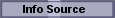

| Root icon
 |
Leaf icon
|
| To record an information source from which knowledge nuggets are to be extracted. |
|
Fill in the fields for the article (but see below for a shortcut). |
|
Use your favorite method to find an article's PubMed ID (PMID) and place
it in the clipboard. Finally, click the "get" button. (There's no need to paste.) |
|
The author list is alphabetical. This will be fixed in subsequent versions. The full-text URL finder may not work for some journals, depending on what full-text providers your institution subscribes to. |